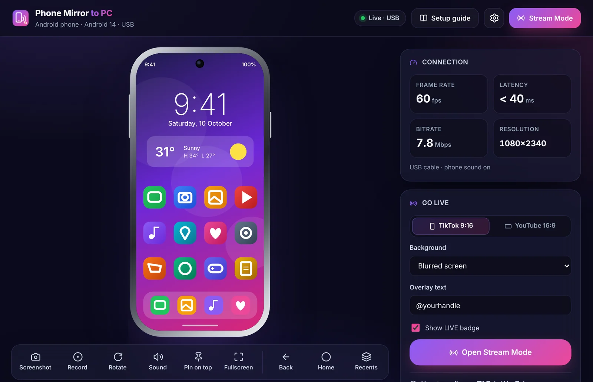
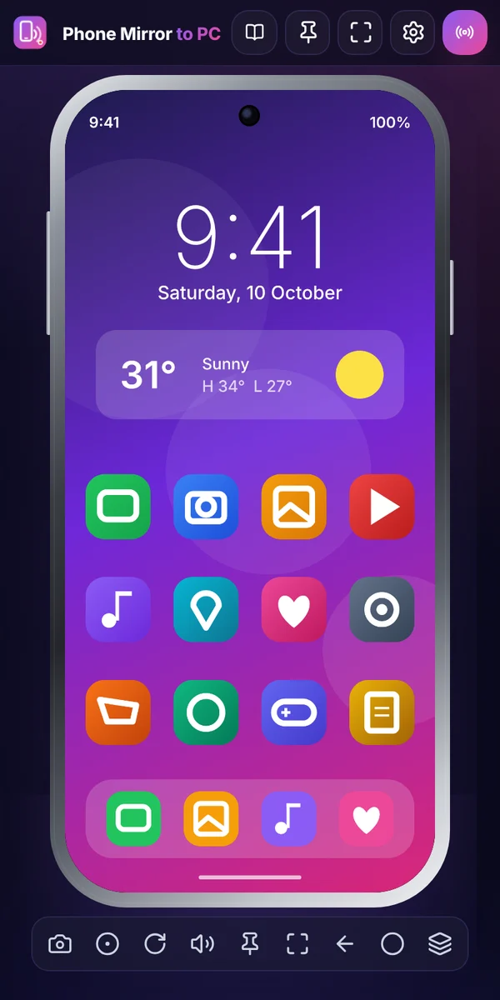
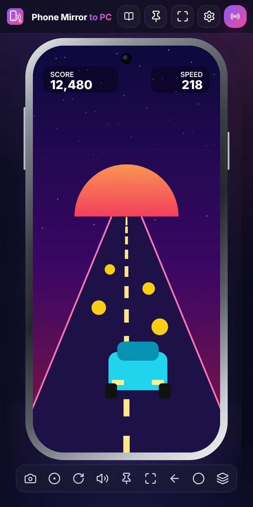
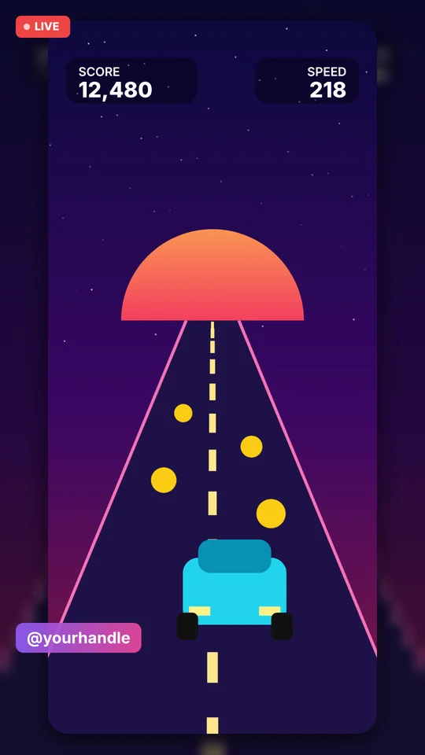
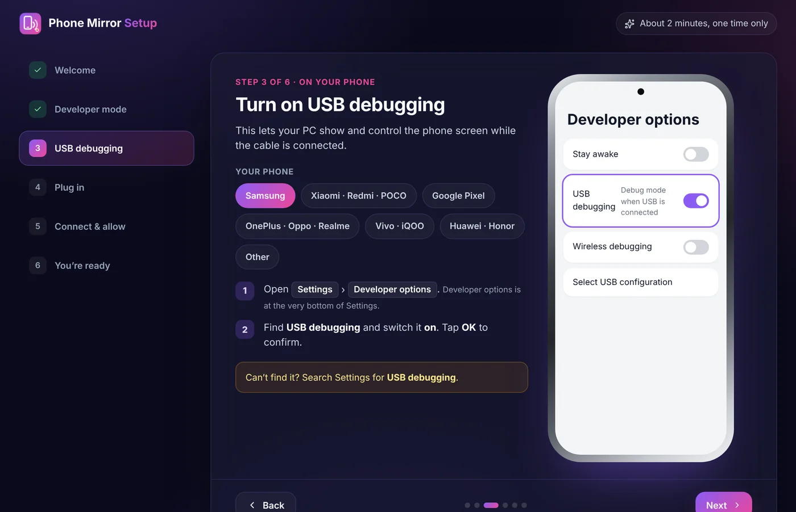

Mirror your Android phone to your PC
See and control your phone in Chrome with one USB cable. Play, record, present, or go live on TikTok and YouTube from the big screen.

What is Phone Screen Mirror to PC?
Phone Screen Mirror to PC is a free Chrome extension that shows your Android phone's screen on any Windows, Mac, Linux or Chromebook computer over a USB cable. You control the phone with your mouse and hear its sound on the PC. Nothing is installed on the phone, there is no desktop program, and no data leaves your computer.
Your phone, on the big screen
Everything you need to use, show and stream your phone from your computer.
Sharp, smooth mirroring
Up to 1080p at 60 fps over USB, with very little delay. Choose Auto, 1080p, 720p or 480p.
Mouse control
Click to tap, drag to swipe, scroll lists and right-click for Back. Home and Recents are one click away.
Phone sound on PC
Hear games, music and videos through your computer (Android 11+), or use the phone's microphone.
Floating window
Your phone stays on screen while you switch tabs. Move it, resize it, or pin it on top of every app.
Go live
Stream Mode builds a clean 9:16 or 16:9 picture for TikTok and YouTube lives in OBS or TikTok LIVE Studio.
Private by design
Video and sound stay on your computer. No account, no ads, no tracking. Only one Chrome permission.
Keep your phone in view while you work
Click the extension icon and your phone opens in its own small window. It stays visible on every tab, so you can answer chats or watch a game while you work.
- Drag it anywhere and resize it
- Pin on top keeps it above every window and app
- Expand to the full studio with one click

Use your phone with your mouse
Play mobile games, scroll feeds and use any app on the big screen. Your clicks become taps on the phone.
- Click to tap, drag to swipe, scroll to move
- Right-click for Back, plus Home and Recents buttons
- Screenshots and screen recording in one click

Go live on TikTok and YouTube
Stream Mode turns your phone screen into a ready-made live picture. Add it to OBS Studio or TikTok LIVE Studio with Window Capture and press Go Live.
- 9:16 for TikTok, 16:9 for YouTube
- Blurred, gradient, solid or green-screen background
- Your @handle and a LIVE badge on screen

Set up once in about 2 minutes
A step-by-step guide opens right after you install, with exact steps for Samsung, Xiaomi, Pixel, OnePlus, Vivo, Huawei and other phones.
Turn on USB debugging
On the phone, tap Build number 7 times in About phone, then switch on USB debugging in Developer options.
Plug in your phone
Connect it to your PC with a USB data cable. Some cables only charge, so try another if nothing happens.
Click Connect, tap Allow
Click the extension icon, then Connect phone. Tap Allow on the phone. Next time it connects by itself.
Requirements
- An Android phone or tablet with Android 5.0 or newer (sound needs Android 11+)
- A USB data cable
- Chrome or Edge 116+ on Windows, macOS, Linux or ChromeOS
- iPhone and iPad are not supported

Nothing extra to install
Most phone mirroring tools need a phone app, a desktop program or both. This one runs inside Chrome.
| Phone Screen Mirror to PC | Typical mirroring apps | |
|---|---|---|
| App on the phone | Not needed | Usually required |
| Program on the PC | Not needed, runs in Chrome | Desktop install, often needs admin rights |
| Account | None | Often required |
| Price | Free | Free tier, HD or wireless often paid |
| Works on Chromebook | Yes | Rarely |
| Wireless | Not yet, USB only | Often available |
| Built-in live streaming layout | Yes, 9:16 and 16:9 | Rarely |
Questions people ask
How do I mirror my Android phone to my PC?
Install the free Phone Screen Mirror to PC extension in Chrome. Turn on USB debugging on your phone (the setup guide shows how for each brand), plug the phone into your PC with a USB data cable, click the extension icon, then click Connect phone and tap Allow on the phone. Your phone screen appears on the PC.
Do I need to install an app on my phone?
No. Nothing is installed on the phone and no program is installed on the PC. You only need the Chrome extension and a USB cable.
Is Phone Screen Mirror to PC free?
Yes. It is free, with no account, no ads and no watermark.
Does it work over Wi-Fi without a cable?
Not at the moment. It connects with a USB cable only, which gives a stable picture with low delay.
Does it work with iPhone?
No. It works with Android phones and tablets running Android 5.0 or newer. iPhone and iPad are not supported.
Can I hear my phone's sound on my PC?
Yes, on Android 11 or newer. You can also switch to the phone's microphone, and add your PC microphone to recordings and Stream Mode.
Can I control my phone with my mouse?
Yes. Click to tap, drag to swipe, scroll to move through lists, and right-click for Back. Back, Home and Recent apps buttons are also on the toolbar. To type, use the phone's on-screen keyboard with the mouse.
Can I go live on TikTok or YouTube with my phone screen?
Yes. Stream Mode makes a clean 9:16 picture for TikTok or 16:9 for YouTube, with a blurred, gradient or green-screen background, your @handle and a LIVE badge. Add it to OBS Studio or TikTok LIVE Studio with Window Capture.
Which computers does it work on?
Any Windows, macOS, Linux or ChromeOS computer with Google Chrome or Microsoft Edge 116 or newer. Some Windows PCs need the phone maker's USB driver.
Is it safe and private?
Yes. The phone's screen and sound go straight over the cable to your own computer. Nothing is uploaded and no data is collected. The extension asks for only one Chrome permission, storage, to remember your settings. Read the privacy policy.
Why is the screen black in some apps?
Some apps, such as banking and video streaming apps, block screen capture on purpose. Those apps show black while everything else mirrors normally.
Something not working? Visit Support.
See your phone on your PC in 2 minutes
Free, private and nothing to install on your phone.